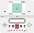
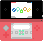
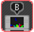
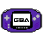

Kézikönyv - Nyomógomb vezérlés
Kézikönyv - Érintő vezérlés


TWiLight Menu++ Boot gyorsindítók
Nyomjon , , & a TWiLight Menu++ beállítások alaphelyzetbe állításához.
Tartsa nyomva a SELECT-et, hogy közvetlenül a beállításokhoz jusson.
Tartsa nyomva a gombot, hogy automatikusan az utoljára indított ROM-ot indítsa, a ROM menü helyett, ha az utolsó ROM autoboot-ja tiltott (ellenkezőt eredményezi, ha engedélyezett).
Tartsa nyomva a SELECT-et, hogy közvetlenül a beállításokhoz jusson.
Tartsa nyomva a gombot, hogy automatikusan az utoljára indított ROM-ot indítsa, a ROM menü helyett, ha az utolsó ROM autoboot-ja tiltott (ellenkezőt eredményezi, ha engedélyezett).
Téma információ
A TWiLight Menu++ 6 különböző választható témával rendelkezik. Ezek alternatív menük, amik más-más dizájnnal rendelkeznek, néhány egészen más navigálási stílussal rendelkezik.

Nintendo DSi
Nintendo DSi

Nintendo 3DS
Nintendo 3DS
Homebrew Launcher
Fa UI
Eredeti R4
SEGA Saturn
Játék betöltők
A TWiLight Menu++, ahogy a nevében is van, csak egy menü. Valójában nem tölti be a ROM-ot magát. Itt találhatók az útmutató oldalak a ROM betöltőkhöz:

nds-bootstrap
nds-bootstrap

GBARunner2
GBARunner2
Egyéb információk
Chat
Beállítások